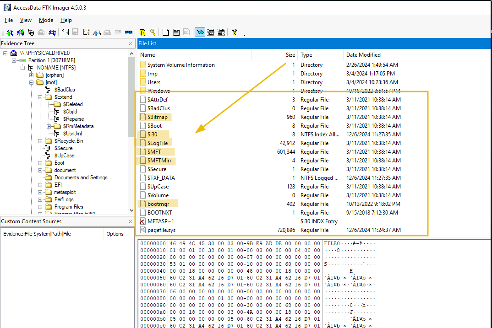
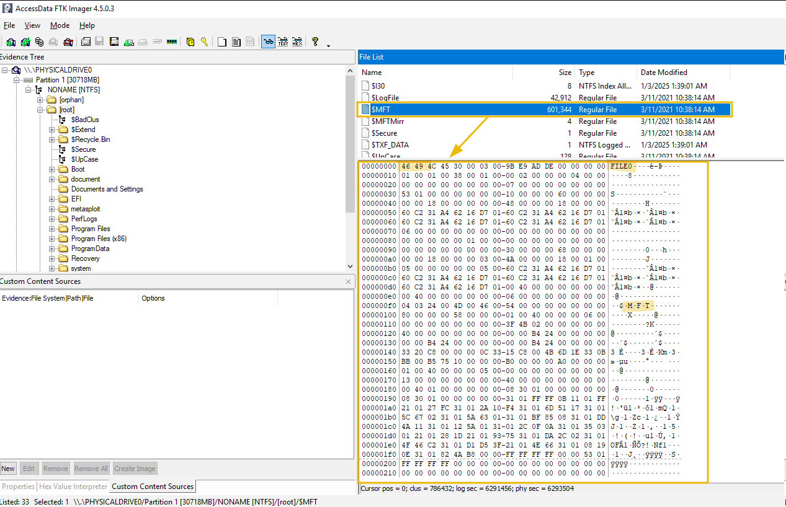
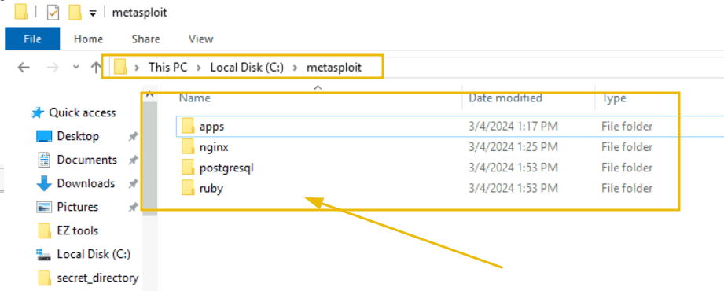
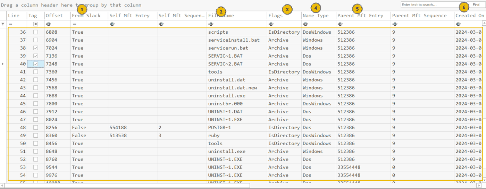
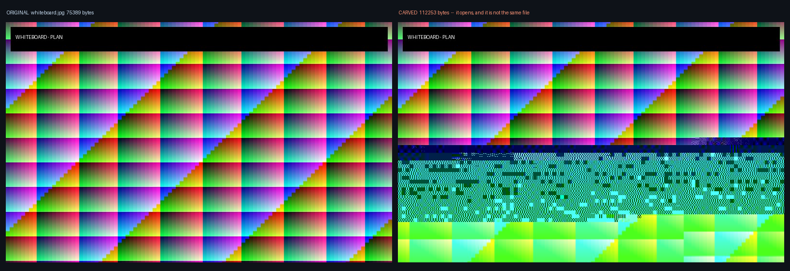
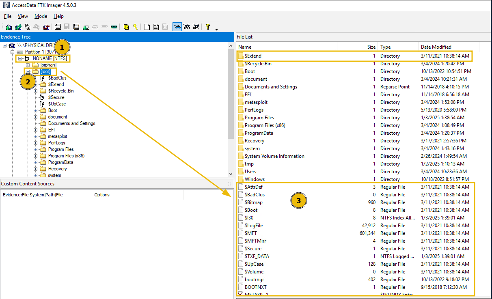
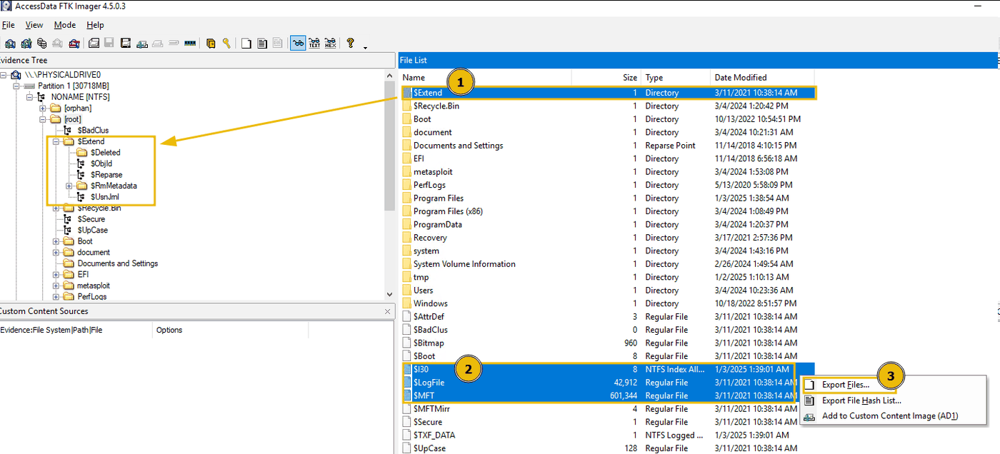
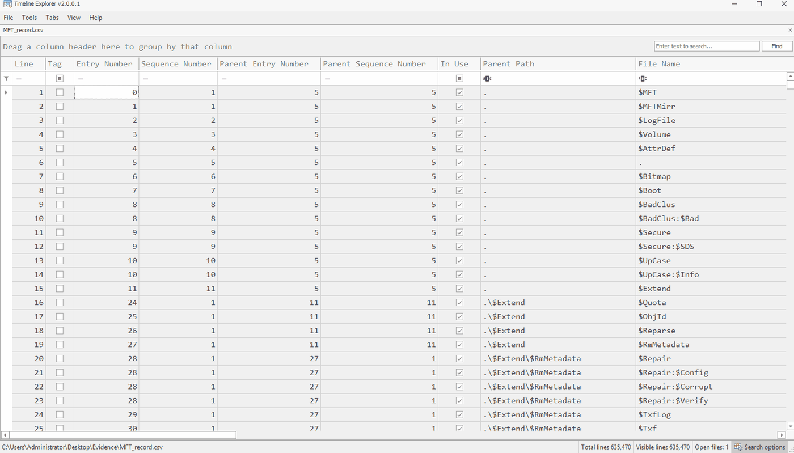

File systems أنظمة الملفات
`P08` stopped at the cluster. This page opens the structures that decide which cluster a file gets, what happens to them when a file is deleted, and what is still readable after those structures are gone entirely. توقّفت `P08` عند الـ cluster. و تفتح هذه الصفحة البنى التي تقرّر أي cluster يأخذه الملف، و ما يحدث لها عند حذف ملف، و ما يظل قابلاً للقراءة بعد أن تختفي تلك البنى تمامًا.
| Topic | Minutes | Hands-on |
|---|---|---|
| T14 File Systems — FAT & NTFSأنظمة الملفات — FAT و NTFS | 52 | Yes |
| T15 Carving & Deleted Dataالـ carving و البيانات المحذوفة | 25 | Yes |
Every number on this page is measured from EVS-11, three disk images built by scripts/make_evs11.py in this repository. 49 assertions were run against the produced images before a word of this page was written.
كل رقم على هذه الصفحة مقيس من EVS-11، و هي ثلاث صور أقراص بناها scripts/make_evs11.py في هذا المستودع. و جرى تنفيذ ٤٩ فحصًا على الصور المنتَجة قبل كتابة كلمة واحدة من هذه الصفحة.
Where we are أين نحن الآن
`P08` was about the disk — sectors, clusters, and how a disk is divided. This page is about the bookkeeping that sits on top of a partition and turns a region of clusters into files with names. كانت `P08` عن القرص — الـ sectors و الـ clusters و كيف يُقسَّم. و هذه الصفحة عن المسك الدفتري الذي يجلس فوق الـ partition و يحوّل منطقة من الـ clusters إلى ملفات لها أسماء.
What you will be able to do ما الذي ستكون قادرًا عليه
| # | By the end of this page |
|---|---|
| 1 | Read a FAT directory entry and follow a cluster chain by handقراءة directory entry في الـ FAT و تتبّع سلسلة clusters يدويًّا |
| 2 | State exactly what a delete changes on FAT — and what it does notتحديد ما يغيّره الحذف في الـ FAT بالضبط — و ما لا يغيّره |
| 3 | Read an $MFT record: header, attributes, resident and non-resident $DATAقراءة سجل $MFT: الـ header و الـ attributes و الـ $DATA الـ resident و الـ non-resident |
| 4 | Find a second data stream that no directory listing reportsالعثور على data stream ثانٍ لا يعرضه أي سرد للمجلد |
| 5 | Carve files from a volume with no file system at allاستخراج ملفات بالـ carving من volume بلا نظام ملفات إطلاقًا |
| 6 | Say which carved files you would sign for, and why the others failتحديد أي الملفات المستخرَجة توقّع عليها، و لماذا تفشل البقية |
`T14` and `T15` are one continuous argument: the file system is a set of promises about where things are, and forensics is what you do when those promises are missing or wrong. `T14` و `T15` حجة واحدة متّصلة: نظام الملفات مجموعة وعود عن مواضع الأشياء، و علم الأدلة الرقمية هو ما تفعله حين تكون تلك الوعود غائبة أو خاطئة.
How FAT keeps trackكيف تتعقّب الـ FAT الملفات
Three structures, one number each, and a chain that is the only thing that knows the order.ثلاث بنى، رقم واحد في كلٍّ منها، و سلسلة هي وحدها ما يعرف الترتيب.
What is a file system? ما هو نظام الملفات؟
A disk is sectors; a file system is the bookkeeping that turns sectors into files: which name goes with which clusters, in what order, with what dates. Think of a library — the books are the data, the catalogue is the file system, and a book with no catalogue card is still on the shelf. القرص sectors؛ و نظام الملفات هو الدفاتر التي تحوّل الـ sectors إلى ملفات: أي اسم يخص أي clusters، و بأي ترتيب، و بأي تواريخ. تخيّل مكتبة — الكتب هي البيانات، و الفهرس هو نظام الملفات، و الكتاب الذي لا بطاقة له في الفهرس لا يزال على الرف.
| Family | Where you meet it | What it means for you |
|---|---|---|
| FAT 12 · 16 · 32 · exFAT | USB sticks, cameras, the EFI partition, old Windowsذواكر USB و الكاميرات و partition الـ EFI و ويندوز القديم. | simple, no permissions, no journal — easy to read, easy to fakeبسيط، بلا صلاحيات و بلا journal — سهل القراءة و سهل التزييف. |
| NTFS | every Windows system diskكل قرص نظام في ويندوز. | one table, journals, streams, eight timestampsجدول واحد، و journals، و streams، و ثمانية توقيتات. |
| ext 2 · 3 · 4 | Linux — servers, Android, your Kali VMلينكس — الخوادم و Android و جهاز Kali الخاص بك. | inodes, block groups, a journal since ext3 — Part 4inodes و block groups و journal منذ ext3 — الجزء الرابع. |
The three structures البنى الثلاث
A FAT volume keeps a file in three separate places. None of them is the file, and you need all three to read one. يحفظ الـ volume من نوع FAT الملف في ثلاثة مواضع منفصلة. و لا واحد منها هو الملف، و تحتاجها جميعًا لتقرأ ملفًّا واحدًا.
Six live files and one deleted entry on EVS-11-fat.dd. site_photo.jpg occupies twelve consecutive clusters starting at 3. whiteboard.jpg occupies nineteen clusters in two runs — 20–28 and 38–47 — with nine clusters of an unrelated log file between them.
ستة ملفات حيّة و مدخل محذوف واحد على EVS-11-fat.dd. يشغل site_photo.jpg اثني عشر cluster متتاليًا تبدأ من ٣. و يشغل whiteboard.jpg تسعة عشر cluster في مقطعين — ٢٠–٢٨ و ٣٨–٤٧ — و بينهما تسعة clusters لملف سجلات لا علاقة له به.
The FAT32 volume map — reserved, FATs, data خريطة volume الـ FAT32 — المنطقة المحجوزة و الـ FATs و البيانات
Three regions in a fixed order, and two numbers in the boot sector place all of them. Everything you compute on a FAT volume starts here. ثلاث مناطق بترتيب ثابت، و رقمان في الـ boot sector يحددان موضعها جميعًا. و كل ما تحسبه على volume من نوع FAT يبدأ من هنا.
| Boot sector | Field | Why you read it |
|---|---|---|
| 0x0B–0x0C | bytes per sectorالـ bytes لكل sector | 512, almost always512 في الغالب الأعم. |
| 0x0D | sectors per clusterالـ sectors لكل cluster | the cluster size, and so the slack (P08)حجم الـ cluster، و منه الـ slack (P08). |
| 0x0E–0x0F | reserved sectorsالـ sectors المحجوزة | where FAT1 startsحيث يبدأ FAT1. |
| 0x10 | number of FATsعدد الـ FATs | 2 — and FAT2 is your cross-check2 — و FAT2 هو مرجع التحقق. |
| 0x24–0x27 | sectors per FATالـ sectors لكل FAT | where FAT2 and the data startحيث يبدأ FAT2 و البيانات. |
| 0x2C–0x2F | root directory clustercluster الـ root directory | usually 2غالبًا 2. |
| 0x32–0x33 | backup boot sectorالـ boot sector الاحتياطي | usually 6 — the Case 04 discriminatorغالبًا 6 — الفاصل في القضية ٠٤. |
What a directory entry holds ما يحمله الـ directory entry
Thirty-two bytes per file. That is the whole entry, and it is worth knowing by field — because in the next screen one of these bytes changes and nothing else does. اثنان و ثلاثون byte لكل ملف. هذا هو المدخل كله، و يستحق أن تعرفه حقلاً حقلاً — لأن byte واحدًا منه سيتغيّر في الشاشة التالية و لن يتغيّر شيء آخر.
| Offset | Bytes | Field |
|---|---|---|
| 0 | 8 | name, padded with spacesالاسم، مكمّلاً بمسافات |
| 8 | 3 | extensionالامتداد |
| 11 | 1 | attributes — read-only, hidden, system, volume label, directoryالخصائص — للقراءة فقط، مخفي، نظام، volume label، مجلد |
| 13–17 | 5 | creation time and date — 2-second resolution, plus tenthsوقت و تاريخ الإنشاء — بدقة ثانيتين، مع أعشار الثانية |
| 18 | 2 | last access — a date only, no timeآخر وصول — تاريخ فقط، بلا وقت |
| 20 | 2 | first cluster, high 16 bits (FAT32 only)أول cluster، الـ 16 bit العليا (في FAT32 فقط) |
| 22 | 4 | last write time and dateوقت و تاريخ آخر كتابة |
| 26 | 2 | first cluster, low 16 bitsأول cluster، الـ 16 bit الدنيا |
| 28 | 4 | size in bytesالحجم بالـ bytes |
The 8.3 name is why the entry for whiteboard.jpg reads WHITEB~1.JPG. The long name is stored separately, in extra entries with attribute 0x0F immediately before the short one — which is a detail worth knowing, because a tool that ignores them shows you tildes and a tool that ignores the short entry loses the size and the first cluster.
اسم 8.3 هو سبب ظهور مدخل whiteboard.jpg بصيغة WHITEB~1.JPG. أما الاسم الطويل فيُخزَّن منفصلاً في مدخلات إضافية خاصّتها 0x0F تسبق القصير مباشرةً — و هي تفصيلة تستحق المعرفة، لأن الأداة التي تتجاهلها تعرض لك علامات ~، و الأداة التي تتجاهل المدخل القصير تفقد الحجم و أول cluster.
A file’s chain, before and after deletion سلسلة ملف، قبل الحذف و بعده
The directory entry knows only the first cluster. The FAT knows the rest: entry 11 says next is 12, entry 12 says 13, entry 13 says end. Delete the file and watch which of those change. الـ directory entry يعرف الـ cluster الأول فقط. و الـ FAT يعرف الباقي: المدخل 11 يقول التالي 12، و 12 يقول 13، و 13 يقول النهاية. احذف الملف و راقب أيها يتغيّر.
What deleting actually does ما الذي يفعله الحذف فعلاً
One file was deleted from this volume before it was handed over. Here is every byte that changed. حُذف ملف واحد من هذا الـ volume قبل تسليمه. و هذه كل الـ bytes التي تغيّرت.
The entry still reads E5 4C 44 5F 49 4E 7E 31 50 44 46 — ten of the eleven name bytes, the size 1,583, and the first cluster 19. The FAT entry for cluster 19 is zero. Cluster 19 still begins 25 50 44 46.
ما زال المدخل يقرأ E5 4C 44 5F 49 4E 7E 31 50 44 46 — عشرة من أحد عشر byte من الاسم، و الحجم ١٬٥٨٣، و أول cluster ١٩. و مدخل الـ FAT للـ cluster ١٩ صفر. و ما زال الـ cluster ١٩ يبدأ بـ25 50 44 46.
Not who deleted it and not when. The entry carries a modification date — that is when the file was last written, not when it was deleted. FAT records no deletion time at all. لا من حذفه و لا متى. يحمل المدخل تاريخ تعديل — و هو وقت آخر كتابة للملف، لا وقت حذفه. فالـ FAT لا تسجّل وقت حذف إطلاقًا.
Why recovery gets harder with time لماذا تصعب الاستعادة مع الوقت
The deleted file is recoverable because nothing has needed its cluster yet. That is the whole of the protection, and it is not protection. الملف المحذوف قابل للاستعادة لأن لا شيء احتاج الـ cluster الخاص به بعد. و هذه كل الحماية، و هي ليست حماية.
| What happens next | What it costs you |
|---|---|
| nothing is writtenلا يُكتب شيء | the file is fully recoverable, indefinitelyالملف قابل للاستعادة بالكامل، بلا حدّ زمني |
| a smaller file takes the clusterملف أصغر يأخذ الـ cluster | the beginning is gone; the tail survives in the slack — `P08`البداية اختفت؛ و الذيل ينجو في الـ slack — راجع `P08` |
| a larger file takes itملف أكبر يأخذه | the cluster is overwritten entirelyيُكتب فوق الـ cluster بالكامل |
| the disk is an SSD with TRIMالقرص SSD مفعّل عليه TRIM | the controller may have zeroed it already — `P04`قد يكون الـ controller صفّره بالفعل — راجع `P04` |
- “The file was not recovered” is a statement about the disk you were given, at the moment you looked at it. It is not a statement about whether the file ever existed. عبارة «لم يُستَرجَع الملف» قول عن القرص الذي أُعطيته، في اللحظة التي نظرت فيها إليه. و ليست قولاً عن هل وُجد الملف أصلاً.
Three things an attacker does to a FAT32 volume ثلاثة أشياء يفعلها المهاجم بـ volume من نوع FAT32
FAT32 has no permission model and no journal. That is why USB sticks are formatted with it, and why each of these takes one byte or one field. لا يملك FAT32 نموذج صلاحيات و لا journal. و لهذا تُهيّأ ذواكر USB به، و لهذا يحتاج كل مما يلي إلى byte واحد أو حقل واحد.
| Technique | What changes on disk | How you see it |
|---|---|---|
| T1564.001 hidden filesإخفاء الملفات | bit 0x02 in the attribute byte at offset 11الـ bit 0x02 في byte الخصائص عند الإزاحة 11. | Explorer hides it; the entry is in plain view in a hex editor and in Autopsy. A one-byte edit anyone can make.يخفيه Explorer؛ و المدخل ظاهر تمامًا في محرّر hex و في Autopsy. تعديل byte واحد يستطيعه أي أحد. |
| T1070.006 timestompتزوير التوقيتات | the three timestamps in the entry, rewrittenالتوقيتات الثلاثة في المدخل، أُعيدت كتابتها. | no journal, so no second copy to compare. Only inconsistency: created after modified, an access date with no creation before it, round numbers.لا journal، فـلا نسخة ثانية للمقارنة. لا يبقى إلا التناقض: إنشاء بعد التعديل، أو وصول بلا إنشاء قبله، أو أرقام مستديرة. |
| T1070.004 deletionحذف الملفات | byte 0 → E5; chain freedالـ byte 0 ← E5؛ و السلسلة حُرّرت. | the previous screen. Recovery from the entry if contiguous; carving if not.الشاشة السابقة. الاستعادة من المدخل إن كان متصلاً؛ و الـ carving إن لم يكن. |
Modified before created is normal. Copying a folder keeps the modification time and resets creation. It is the pattern you must know before calling a timestamp faked. التعديل قبل الإنشاء أمر طبيعي. نسخ مجلد يحتفظ بوقت التعديل و يعيد ضبط وقت الإنشاء. و هذا النمط يجب أن تعرفه قبل أن تصف توقيتًا بأنه مزوَّر.
Each of the three is found by hand in HxD, then again in Autopsy. Knowing the bytes is what lets you decide when two tools disagree. كل واحد من الثلاثة يُكتشف يدويًا في HxD، ثم مرة أخرى في Autopsy. و معرفة الـ bytes هي ما يتيح لك الحكم حين تختلف أداتان.
How NTFS keeps trackكيف يتعقّب الـ NTFS الملفات
One table, one record per file, and a file small enough to live inside its own bookkeeping.جدول واحد، سجل لكل ملف، و ملف صغير بما يكفي ليعيش داخل دفتر حساباته نفسه.
What NTFS adds ما الذي يضيفه NTFS
Every Windows system disk. One table instead of a chain, and a list of features that each become an artifact on the screens that follow. كل قرص نظام في ويندوز. جدول واحد بدل السلسلة، و قائمة ميزات تتحوّل كل واحدة منها إلى artifact في الشاشات التالية.
The NTFS system files — records 0 to 11 ملفات نظام NTFS — السجلات من 0 إلى 11
The first sixteen records of the $MFT are reserved for the file system itself. They start with $ and Explorer never shows them; FTK Imager shows every one.
السجلات الستة عشر الأولى في الـ $MFT محجوزة لنظام الملفات نفسه. تبدأ بـ$ و لا يعرضها Explorer أبدًا؛ و يعرضها FTK Imager كلها.
| # | File | Purpose |
|---|---|---|
| 0 | $MFT | the table itselfالجدول نفسه. |
| 1 | $MFTMirr | a copy of the first records onlyنسخة من السجلات الأولى فقط. |
| 2 | $LogFile | the transaction journal, hours of historyjournal العمليات، ساعات من التاريخ. |
| 3 | $Volume | label, version, dirty flagالاسم و الإصدار و علامة الخلل. |
| 4 | $AttrDef | the attribute types in useأنواع السمات المستخدمة. |
| 5 | . | the root directoryالـ root directory. |
| 6 | $Bitmap | which clusters are in use — now, not everأي clusters مستخدمة — الآن، لا في أي وقت. |
| 7 | $Boot | the boot sectorالـ boot sector. |
| 8 | $BadClus | bad clusters — and a classic hiding placeالـ clusters التالفة — و مخبأ كلاسيكي. |
| 9 | $Secure | security descriptorsواصفات الأمان. |
| 10 | $UpCase | the case-folding tableجدول تحويل الحروف. |
| 11 | $Extend | holds $UsnJrnl, $ObjId, $Quota, $Reparseيحوي $UsnJrnl و $ObjId و $Quota و $Reparse. |

$AttrDef to $Volume beside Users and Windows. $MFT is 601 344 bytes here — 587 records’ worth of bookkeeping.
FTK Imager على قرص حي: الجذر يعرض ملفات $ بجوار Users و Windows.
Screenshot: TryHackMe, room NTFS Analysis.The $MFT جدول الـ $MFT
NTFS keeps everything in one table: the Master File Table. Every file has a record in it, every directory has a record in it, and so does the table itself. يحفظ الـ NTFS كل شيء في جدول واحد: الـ Master File Table. لكل ملف سجل فيه، و لكل مجلد سجل فيه، و كذلك للجدول نفسه.
Record size 1,024 bytes. The $MFT starts at LCN 4, offset 0x4000. notes.txt is record 64 and uses 672 of its 1,024 bytes, with its entire 290-byte content inside it. report.bin is record 65 and holds a run list instead.
حجم السجل ١٬٠٢٤ byte. و يبدأ الـ $MFT عند LCN ٤، أي الإزاحة 0x4000. و notes.txt هو السجل ٦٤ و يستهلك ٦٧٢ من ١٬٠٢٤ byte، و محتواه كله ٢٩٠ byte بداخله. أما report.bin فهو السجل ٦٥ و يحمل run list بدلاً من ذلك.
Inside an MFT record — the attributes داخل سجل MFT — السمات
A record is 1 024 bytes: a header that begins FILE0, then attributes, each with a type number. The file’s name, its timestamps and its content are three attributes in one record.
السجل 1 024 byte: header يبدأ بـFILE0، ثم سمات لكل منها رقم نوع. و اسم الملف و توقيتاته و محتواه ثلاث سمات في سجل واحد.

$MFT selected: the first record begins 46 49 4C 45 30 — FILE0 — and $MFT is in it, describing itself.
FTK Imager و $MFT محدد: أول سجل يبدأ بـFILE0 — و الـ $MFT نفسه بداخله، يصف نفسه.
Screenshot: TryHackMe, room NTFS Analysis.FAT and NTFS, side by side الـ FAT و الـ NTFS جنبًا إلى جنب
| FAT | NTFS | |
|---|---|---|
| where the name livesأين يعيش الاسم | a 32-byte directory entry | an attribute in the MFT record |
| where the order livesأين يعيش الترتيب | the FAT, a chain of next-pointers | a run list inside the record |
| timestampsالأزمنة | 3, at 2-second resolution | 8, at 100-nanosecond resolution |
| a small fileالملف الصغير | still gets a whole cluster | may have no cluster at all |
| extra streamsالـ streams الإضافية | no such thing | any number, named |
| on deleteعند الحذف | 1 name byte + the chain | a flag, a link count, a sequence number |
The row that matters most for `T15` is the fourth. On FAT, a 1-byte file still costs a cluster (`P08`). On NTFS, a file under roughly 700 bytes is stored inside the record — so when it is deleted, the content is deleted along with the bookkeeping, in the same place, and both survive together. أهم صف بالنسبة إلى `T15` هو الرابع. ففي الـ FAT يكلّف ملف حجمه byte واحد cluster كاملاً (راجع `P08`). أما في الـ NTFS فيُخزَّن الملف الأقل من نحو ٧٠٠ byte داخل السجل — فحين يُحذف يُحذف المحتوى مع دفتر الحسابات في الموضع نفسه، و ينجوان معًا.
A file that is two files ملف هو ملفان
One more thing NTFS has and FAT does not: a file can carry more than one $DATA attribute. The extra ones have names, and almost nothing reports them.
شيء آخر يملكه الـ NTFS و لا تملكه الـ FAT: يستطيع الملف أن يحمل أكثر من $DATA. و الإضافية لها أسماء، و لا يكاد شيء يعرضها.
A named stream is a place to put something that a directory listing will not count. It is used legitimately — Windows marks downloaded files with Zone.Identifier — and it is used to hide payloads. Both look identical in the $MFT, so finding one is a finding and calling it hiding is an interpretation.
الـ stream المسمّى موضع لوضع شيء لا يعدّه سرد المجلد. و يُستخدم استخدامًا مشروعًا — إذ يعلّم ويندوز الملفات المنزَّلة بـZone.Identifier — و يُستخدم لإخفاء حمولات. و الاثنان يبدوان متطابقين في الـ $MFT، فالعثور على واحد نتيجة، و تسميته إخفاءً استنتاج.
Eight timestamps — MACB, twice ثمانية توقيتات — MACB مرتين
Modified, Accessed, Changed (the record), Born. NTFS stores the four in $STANDARD_INFORMATION and again in $FILE_NAME. Tools show the first set; the kernel keeps the second.
التعديل، و الوصول، و تغيّر السجل، و الإنشاء. يخزّن NTFS الأربعة في $STANDARD_INFORMATION و مرة أخرى في $FILE_NAME. الأدوات تعرض المجموعة الأولى؛ و النواة تحفظ الثانية.
| What it records | What moves it | |
|---|---|---|
| Modified | last change to the contentآخر تغيير في المحتوى. | a writeعملية كتابة. |
| Accessed | last read — often not updated on modern Windowsآخر قراءة — كثيرًا ما لا يُحدَّث في ويندوز الحديث. | a read, if the update is enabledعملية قراءة، إن كان التحديث مفعَّلاً. |
| Changed | last change to the MFT record — rename, permissions, attributesآخر تغيير في سجل الـ MFT — إعادة تسمية، أو صلاحيات، أو سمات. | the kernel; no API sets it directlyالنواة؛ و لا واجهة تضبطه مباشرة. |
| Born | creation on this volumeالإنشاء على هذا الـ volume. | create, or a copy (a move keeps it)الإنشاء، أو النسخ (و النقل يحتفظ به). |
A timestomping tool rewrites $STANDARD_INFORMATION through the API. $FILE_NAME is written by the kernel and is not reachable that way. So $SI created earlier than $FN created, or an $SI time with all-zero fractional seconds, is a finding worth a line — and $UsnJrnl is the third witness.
أداة تزوير التوقيتات تعيد كتابة $STANDARD_INFORMATION عبر الواجهة البرمجية. أما $FILE_NAME فتكتبه النواة و لا يمكن الوصول إليه بتلك الطريقة. فإنشاء $SI الأسبق من إنشاء $FN، أو وقت $SI بأجزاء ثانية كلها أصفار، finding يستحق سطرًا — و $UsnJrnl هو الشاهد الثالث.
Who set the clock. A copy from another disk legitimately produces modified before created, and a tool that rewrites both attributes at the driver level leaves nothing to compare. من ضبط الساعة. فالنسخ من قرص آخر يُنتج بشكل مشروع تعديلاً قبل الإنشاء، و الأداة التي تعيد كتابة السمتين معًا على مستوى الـ driver لا تترك ما يُقارَن.
The two journals — $LogFile and $UsnJrnl الـ journal الاثنان — $LogFile و $UsnJrnl
Two memories of the same events, with different lengths and different detail. Used together, never interchangeably. ذاكرتان للأحداث نفسها، بطولين مختلفين و تفصيلين مختلفين. تُستخدمان معًا، و لا تحل إحداهما محل الأخرى أبدًا.
| $J reason code | Meaning |
|---|---|
FILE_CREATE · FILE_DELETE | the file appeared, the file wentظهر الملف، ذهب الملف. |
RENAME_OLD_NAME · RENAME_NEW_NAME | a rename, with both names — follow a file through its aliasesإعادة تسمية بالاسمين — تتبّع الملف عبر أسمائه. |
DATA_OVERWRITE · DATA_EXTEND · DATA_TRUNCATION | content written, grown, shrunkالمحتوى كُتب، أو كبر، أو صغر. |
NAMED_DATA_OVERWRITE · NAMED_DATA_EXTEND | an alternate data stream was writtenكُتبت alternate data stream. |
CLOSE | the handle closed after the changes aboveأُغلق الـ handle بعد التغييرات أعلاه. |
MFTECmd parses $MFT, $J, $Boot, $SDS and $I30. It does not parse $LogFile, whatever its README says — export it anyway, and read it with dfir_ntfs or NTFS Log Tracker.
يحلّل MFTECmd الملفات $MFT و $J و $Boot و $SDS و $I30. و لا يحلّل $LogFile مهما قال ملف README الخاص به — صدّره على أي حال، و اقرأه بأداة dfir_ntfs أو NTFS Log Tracker.
$I30 — what a folder used to contain $I30 — ما كان يحويه المجلد
A directory’s MFT record holds an index of its children — the $I30 attribute. Entries for files that were deleted, renamed or moved away linger in the index’s slack until overwritten.
يحمل سجل المجلد في الـ MFT فهرسًا بأبنائه — السمة $I30. و مدخلات الملفات التي حُذفت أو أُعيدت تسميتها أو نُقلت تبقى في slack الفهرس حتى يُكتب فوقها.


$I30, parsed: From Slack = True rows are entries the folder no longer lists — installer files that came and went.
الـ $I30 للمجلد نفسه بعد التحليل: الصفوف التي فيها From Slack = True مدخلات لم يعد المجلد يعرضها.
Screenshot: TryHackMe, room NTFS Analysis.Where the file went, or that it still exists anywhere. A busy folder overwrites its slack quickly, a quiet one keeps it for years — the amount of evidence measures the folder’s activity, not the attacker’s care. أين ذهب الملف، أو أنه لا يزال موجودًا في أي مكان. فالمجلد النشط يكتب فوق الـ slack بسرعة، و الهادئ يحتفظ به لسنوات — و كمية الدليل تقيس نشاط المجلد لا حرص المهاجم.
When there is no file systemحين لا يوجد نظام ملفات
The bookkeeping is gone. The bytes are not. What can you still say?اختفى دفتر الحسابات. و لم تختفِ الـ bytes. فما الذي تستطيع قوله بعد؟
What carving is ما هو الـ carving
Every technique so far has asked the file system where a file is. Carving is what you do when there is nothing to ask. كل أسلوب حتى الآن كان يسأل نظام الملفات أين الملف. و الـ carving هو ما تفعله حين لا يوجد من تسأله.
| File-system recovery | Carving |
|---|---|
| reads the directory entry or the MFT recordيقرأ الـ directory entry أو سجل الـ MFT | scans the raw bytes for known signaturesيمسح الـ bytes الخام بحثًا عن توقيعات معروفة |
| recovers the name, the size and the timestampsيستعيد الاسم و الحجم و الأزمنة | recovers none of those — a carved file has no nameلا يستعيد أيًّا منها — فالملف المستخرَج بلا اسم |
| follows a chain, so fragments are fineيتبع سلسلة، فالتجزئة لا تضرّه | reads forward, so a fragment ruins itيقرأ إلى الأمام، فالتجزئة تُفسده |
| cannot see past a wiped tableلا يرى شيئًا بعد جدول ممحو | does not care that the table is goneلا يعنيه اختفاء الجدول |
The two are not alternatives. You run file-system recovery first because it gives you names and times, and then you carve the same image because it finds what the file system has already forgotten. The set of things each one finds is different, and neither is a superset of the other. الاثنان ليسا بديلين. تُجري استعادة نظام الملفات أولاً لأنها تعطيك الأسماء و الأزمنة، ثم تُجري الـ carving على الصورة نفسها لأنه يجد ما نسيه نظام الملفات. فمجموعة ما يجده كلٌّ منهما مختلفة، و لا واحدة منهما تحتوي الأخرى.
Signatures, and where they end التوقيعات، و أين تنتهي
A carver knows a small table of byte patterns. This is the entire table it used on this page. يعرف الـ carver جدولاً صغيرًا من أنماط الـ bytes. و هذا هو الجدول كله الذي استُخدم في هذه الصفحة.
| Type | Header | Footer |
|---|---|---|
| JPEG | FF D8 FF | FF D9 |
| PNG | 89 50 4E 47 0D 0A 1A 0A | IEND AE 42 60 82 |
25 50 44 46 2D — %PDF- | %%EOF | |
| ZIP | 50 4B 03 04 | PK 05 06 + 18 bytes |
A footer is a guess about where the file ends. %%EOF is genuinely the last thing in a PDF — except that most PDFs write a newline after it, so a carver that stops at %%EOF returns a file one byte short. And a ZIP’s end-of-central-directory record has a variable-length comment field after it, so “+18 bytes” is right only when the comment is empty.
الـ footer تخمين لموضع نهاية الملف. فـ%%EOF هو فعلاً آخر ما في الـ PDF — إلا أن معظم ملفات الـ PDF تكتب سطرًا جديدًا بعده، فالـ carver الذي يتوقّف عند %%EOF يعيد ملفًّا ناقصًا byte واحدًا. و في الـ ZIP يأتي بعد سجل نهاية الفهرس المركزي حقل تعليق متغيّر الطول، فعبارة «زائد ١٨ byte» صحيحة فقط حين يكون التعليق فارغًا.
This is why a carved file is compared against a known original by hash whenever one exists, and why a carved file with no original to compare against is reported as carved, never as recovered. و لهذا يُقارن الملف المستخرَج بأصل معروف بالـ hash كلما وُجد أصل، و لهذا يُذكر الملف المستخرَج الذي لا أصل له في التقرير بوصفه مستخرَجًا بالـ carving، لا مستعادًا.
What a fragment does to a carve ما تفعله التجزئة بالاستخراج
The volume in the lab has one fragmented file. Watch what the carver does with it, and note that nothing goes wrong — the carver behaves exactly as designed. في الـ volume الذي في المعمل ملف واحد مجزّأ. راقب ما يفعله الـ carver به، و لاحظ أن لا شيء يعطل — فالـ carver يتصرّف كما صُمّم تمامًا.

Six objects, three outcomes ستة أشياء، ثلاث نتائج
The full result of carving EVS-11-carve.dd. Read the third column before the first.
النتيجة الكاملة لاستخراج EVS-11-carve.dd. اقرأ العمود الثالث قبل الأول.
- A carver finds structures, not files. It found the deleted invoice because it never asked what was deleted, and it wrecked the photograph because it never asked what was fragmented. الـ carver يجد بنى، لا ملفات. وجد الفاتورة المحذوفة لأنه لم يسأل عمّا حُذف، و أفسد الصورة لأنه لم يسأل عمّا جُزّئ.
- Opening is not integrity. Three of these six are exact, and the only thing that told them apart was a hash. الفتح ليس سلامة. ثلاثة من هذه الستة مطابقة، و لم يفرّق بينها إلا الـ hash.
Reading a deleted file out of the $MFTالمعمل — قراءة ملف محذوف من الـ $MFT
Four records, and one of them belongs to a file that is not in the directory.أربعة سجلات، و أحدها لملف ليس في المجلد.
Lab — four MFT records المعمل — أربعة سجلات MFT
Five steps on EVS-11-ntfs.dd. The fourth record is the one to remember.
خمس خطوات على EVS-11-ntfs.dd. و السجل الرابع هو الذي تتذكّره.
The full 212-byte content of old_plan.txt, a file that appears in no directory listing, read out of MFT record 67 at offset 0x14D78 — together with the three fields that prove it was deleted: flags 0x00, link count 0, sequence 2.
المحتوى الكامل ٢١٢ byte لملف old_plan.txt، و هو ملف لا يظهر في أي سرد للمجلد، مقروءًا من السجل ٦٧ عند الإزاحة 0x14D78 — مع الحقول الثلاثة التي تثبت أنه حُذف: flags 0x00 و عدد الروابط صفر و التسلسل ٢.
Not who deleted it, not when, and not whether anyone ever opened it. The record holds a timestamp for when the MFT entry last changed — which the deletion did change — but a timestamp is when something happened, never who made it happen. لا من حذفه، و لا متى، و لا هل فتحه أحد أصلاً. يحمل السجل زمنًا لآخر تغيّر في مدخل الـ MFT — و الحذف غيّره فعلاً — لكن الزمن يقول متى حدث شيء، و لا يقول أبدًا من أحدثه.
Lab — collect once, parse three times, 1 of 2 المعمل — اجمع مرة، و حلّل ثلاث مرات، الجزء الأول
Triage on FOR-WS01’s own disk — not an exhibit, so no blocker and no custody line, and say so in the notes. FTK Imager exports the four metadata files; MFTECmd parses three of them with one command shape.
فرز على قرص FOR-WS01 نفسه — ليس exhibit، فلا write blocker و لا سطر chain of custody، و اذكر ذلك في الملاحظات. يصدّر FTK Imager ملفات الـ metadata الأربعة؛ و يحلّل MFTECmd ثلاثة منها بأمر واحد الشكل.

Partition 1 → NONAME [NTFS] → [root]. The $ files are at the bottom of the list.
File ← Add Evidence Item ← Physical Drive، ثم الجذر. و ملفات $ في أسفل القائمة.
Screenshot: TryHackMe, room NTFS Analysis.
$MFT, $LogFile, $I30 and $Extend\$UsnJrnl:$J → right-click → Export Files into C:\Forensics\Cases\P09\Evidence.
حدّد الملفات الأربعة ← الزر الأيمن ← Export Files إلى مجلد الأدلة.
Screenshot: TryHackMe, room NTFS Analysis.Lab — collect once, parse three times, 2 of 2 المعمل — اجمع مرة، و حلّل ثلاث مرات، الجزء الثاني

MFT_record.csv: records 0–11 are the system files from the table earlier; In Use is the column that says whether the file still exists; Sequence Number says whether the record was reused.
Timeline Explorer على MFT_record.csv: السجلات من 0 إلى 11 هي ملفات النظام من الجدول السابق؛ و عمود In Use يقول هل الملف لا يزال موجودًا؛ و Sequence Number يقول هل أُعيد استخدام السجل.
Screenshot: TryHackMe, room NTFS Analysis.In Use = False means the record persists, not that the data does. And a record reused — a higher sequence number — means the previous occupant is gone from the table: absence of a record is not absence of a file. In Use = False تعني أن السجل باقٍ، لا أن البيانات باقية. و السجل المعاد استخدامه — برقم تسلسلي أعلى — يعني أن الساكن السابق ذهب من الجدول: و غياب السجل ليس غياب الملف.
Case 05 — a volume with no file systemالقضية ٠٥ — volume بلا نظام ملفات
An image that mounts nowhere, and six objects that come out of it.صورة لا تُركَّب في أي مكان، و ستة أشياء تخرج منها.
Case 05 — the brief القضية ٠٥ — الملف
The exhibit. EVS-11-carve.dd, a 40 MiB image acquired from a USB stick. The request. “Recover whatever is on it and tell us what you can stand behind.”
الـ exhibit. EVS-11-carve.dd، صورة حجمها ٤٠ ميجابايت مأخوذة من USB stick. الطلب. «استعد ما عليها و أخبرنا بما تستطيع الدفاع عنه.»
| What you are given | What you are not |
|---|---|
| the image, and its acquisition hashالصورة، و قيمة hash الـ acquisition الخاصة بها | any statement of what was on the volumeأي بيان بما كان على الـ volume |
| the tools on your own machineالأدوات على جهازك أنت | a working file system to readنظام ملفات صالح للقراءة |
| `T04`’s signature table from `P03`جدول التوقيعات من `T04` في `P03` | the names of any of the filesأسماء أي من الملفات |
Everything you report here is carved, not recovered. Keep the two words apart from the first line of the notes, because by the time you are writing Section 8 it is too late to remember which was which. كل ما تذكره هنا مستخرَج بالـ carving، لا مستعاد. افصل بين الكلمتين من أول سطر في ملاحظاتك، لأنك حين تصل إلى القسم الثامن سيكون قد فات وقت تذكّر أيّهما كان أيًّا.
Lab — carving Case 05 المعمل — استخراج القضية ٠٥
Five steps. The third is the only one that decides anything. خمس خطوات. الثالثة وحدها هي التي تقرّر شيئًا.
Lab — the same carve with PhotoRec المعمل — الـ carving نفسه بأداة PhotoRec
PhotoRec ships with TestDisk and does what you did by hand: reads every sector, matches signatures, writes each object out under a generated name. It opens the source read-only — the (RO) in the disk list is the thing to look for.
تأتي PhotoRec مع TestDisk و تفعل ما فعلته يدويًا: تقرأ كل sector، و تطابق الـ signatures، و تكتب كل عنصر باسم مولَّد. و تفتح المصدر للقراءة فقط — و علامة (RO) في قائمة الأقراص هي ما تبحث عنه.
f0011328.jpg: f for file, then the sector where the signature was found. That number is the offset you cite — 11 328 × 512 — and report.xml is the tool’s own log of what it did. Neither knows the original name, and every object still gets hashed against the source.
f0011328.jpg: f لكلمة file، ثم رقم الـ sector الذي وُجدت فيه الـ signature. و هذا الرقم هو الإزاحة التي تذكرها — 11 328 × 512 — و report.xml هو سجل الأداة لما فعلته. و لا يعرف أي منهما الاسم الأصلي، و كل عنصر يُحسب له hash و يُقارن بالمصدر.
Exercise — four carving claims تمرين — أربعة ادّعاءات عن الـ carving
An analyst carved Case 05 and wrote these four lines. For each: would you sign it? استخرج محلل القضية ٠٥ و كتب هذه السطور الأربعة. لكلٍّ منها: هل كنت ستوقّع عليه؟
| # | The line, and the question it raises |
|---|---|
| 1 | “Six files were recovered from the volume.” — six objects were carved, and one of them is 37 KB of two files spliced together. Is that six files?«استُعيدت ستة ملفات من الـ volume.» — استُخرجت ستة أشياء، و أحدها ٣٧ كيلوبايت من ملفين ملتصقين. فهل هذه ستة ملفات؟ |
| 2 | “The JPEG at 0x2C000 is a photograph of a whiteboard.” — it opens and it shows one. Does it show only one thing?«الـ JPEG عند 0x2C000 صورة لسبّورة.» — تُفتح و تُظهر واحدة. فهل تُظهر شيئًا واحدًا فقط؟ |
| 3 | “The invoice PDF had been deleted by the user.” — the file system that would say so was zeroed. What in the carved bytes names an actor?«حذف المستخدم ملف الفاتورة.» — نظام الملفات الذي كان سيقول ذلك صُفِّر. فما الذي في الـ bytes المستخرَجة يُسمّي فاعلاً؟ |
| 4 | “handover.pdf is unmodified.” — the carved copy is 1,624 bytes and differs from the original. Which of the two is the modified one?«ملف handover.pdf غير معدَّل.» — النسخة المستخرَجة ١٬٦٢٤ byte و تختلف عن الأصل. فأيّهما المعدَّل؟ |
Line 4 is the trap, and it is the same trap as `P08`’s line 4 wearing different clothes. The carved copy is short because the carver stopped early, not because anyone changed the file. A hash mismatch is a finding about two files; deciding which one moved needs a third fact. السطر الرابع هو الفخّ، و هو الفخّ نفسه في السطر الرابع من `P08` بثياب مختلفة. فالنسخة المستخرَجة أقصر لأن الـ carver توقّف مبكرًا، لا لأن أحدًا غيّر الملف. و اختلاف الـ hash نتيجة عن ملفين؛ أما تحديد أيّهما تغيّر فيحتاج حقيقة ثالثة.
ext — the Linux file systemext — نظام ملفات لينكس
Inodes instead of records, block groups instead of one table, and a timestamp the attacker cannot set. Read on your Kali machine.inodes بدل السجلات، و block groups بدل جدول واحد، و توقيت لا يستطيع المهاجم ضبطه. تُقرأ على جهاز Kali الخاص بك.
What ext is, and where it came from ما هو ext، و من أين جاء
The extended file system arrived with Linux in 1992. ext2 is the shape; ext3 added a journal; ext4 added extents, larger limits and a creation time. Your Kali VM, most servers and every Android phone run one of them. ظهر نظام الملفات ext مع لينكس عام 1992. الـ ext2 هو الشكل الأساسي؛ و أضاف ext3 الـ journal؛ و أضاف ext4 الـ extents و حدودًا أكبر و وقت الإنشاء. و جهاز Kali الخاص بك و معظم الخوادم و كل هاتف Android تعمل بواحد منها.
| ext2 | ext3 | ext4 | |
|---|---|---|---|
| journalالـ journal | none | yes — metadata, optionally data | yes, with checksums |
| maximum fileأقصى حجم ملف | 2 TiB | 2 TiB | 16 TiB |
| maximum volumeأقصى حجم volume | 32 TiB | 32 TiB | 1 EiB |
| block pointersمؤشرات الـ blocks | direct + indirect | direct + indirect | extents — ranges |
| creation timeوقت الإنشاء | no | no | crtime |
| what deletion clearsما يمسحه الحذف | only the directory link | the block pointers too | the extent tree too |
Superblock (the volume’s own description) · block groups (the disk cut into equal regions) · inodes (one record per file, without its name) · directory entries (name → inode number) · bitmaps (which blocks and inodes are in use). الـ superblock (وصف الـ volume لنفسه) · الـ block groups (القرص مقطّعًا إلى مناطق متساوية) · الـ inodes (سجل لكل ملف، بلا اسمه) · الـ directory entries (اسم ← رقم inode) · الـ bitmaps (أي blocks و inodes مستخدمة).
The layout — superblock and block groups التخطيط — الـ superblock و الـ block groups
An ext volume is cut into blocks of 1 024, 2 048 or 4 096 bytes, and the blocks are gathered into equal block groups. Each group carries its own copy of the bookkeeping, so the volume has no single point of failure. يُقطَّع volume الـ ext إلى blocks بحجم 1 024 أو 2 048 أو 4 096 byte، و تُجمع الـ blocks في block groups متساوية. و كل مجموعة تحمل نسختها من الدفاتر، فلا توجد نقطة فشل واحدة في الـ volume.
Reading the superblock — three ways قراءة الـ superblock — بثلاث طرق
Raw bytes with dd and hexdump; decoded with dumpe2fs; walked with debugfs. Same volume, one value confirmed three times — that is the habit.
الـ bytes الخام بأداتي dd و hexdump؛ و مفكوكة بأداة dumpe2fs؛ و مستعرَضة بأداة debugfs. الـ volume نفسه، و قيمة واحدة تُؤكَّد ثلاث مرات — و هذه هي العادة.
Inodes — the record that is not the name الـ inodes — السجل الذي ليس هو الاسم
Every file and directory has an inode: 256 bytes holding mode and permissions, owner, size, link count, five timestamps and the extents that say which blocks hold the content. The name is not in it — names live in directory blocks, as name → inode number. لكل ملف و مجلد inode: 256 byte تحمل النوع و الصلاحيات و المالك و الحجم و عدد الروابط و خمسة توقيتات و الـ extents التي تقول أي blocks تحمل المحتوى. و الاسم ليس فيه — الأسماء تعيش في blocks المجلدات على شكل اسم ← رقم inode.
chmod 755 on the file moved exactly three things in the inode: i_mode, ctime, and the inode checksum. atime, mtime and crtime did not move. Predict which timestamp changes, then check — that is the exercise.
تغيير الصلاحيات بأمر chmod 755 حرّك ثلاثة أشياء بالضبط في الـ inode: i_mode و ctime و checksum الـ inode. و لم يتحرك atime و لا mtime و لا crtime. توقّع أي توقيت يتغير، ثم تحقق — هذا هو التمرين.
Five timestamps, and the one you cannot fake خمسة توقيتات، و الواحد الذي لا يمكن تزييفه
| Records | Set by | |
|---|---|---|
| atime | last read — often frozen by relatime/noatimeآخر قراءة — كثيرًا ما تجمّده خيارات الـ mount. | a read; anyone with touch -aقراءة؛ أو أي شخص بأمر touch -a. |
| mtime | last change to the contentآخر تغيير في المحتوى. | a write; anyone with touch -dكتابة؛ أو أي شخص بأمر touch -d. |
| ctime | last change to the inode — mode, owner, links, and any touchآخر تغيير في الـ inode — النوع أو المالك أو الروابط أو أي touch. | the kernel only, to the current clockالنواة فقط، بالساعة الحالية. |
| crtime | creation — ext4 only; stat calls it Birthالإنشاء — في ext4 فقط؛ و يسمّيه stat باسم Birth. | the kernel, at creationالنواة، عند الإنشاء. |
| dtime | deletion, on a deleted inodeالحذف، في inode محذوف. | the kernel, at unlinkالنواة، عند الحذف. |
The kernel sets ctime to the system clock — so an attacker who moves the clock, or edits the inode on the raw device with debugfs set_inode_field, defeats the check. A 2016 mtime is also what cp -p, tar and rsync -a legitimately preserve.
تضبط النواة ctime بساعة النظام — فالمهاجم الذي يغيّر الساعة، أو يعدّل الـ inode على الجهاز الخام بأمر debugfs set_inode_field، يتجاوز الفحص. و mtime من 2016 هو أيضًا ما تحفظه cp -p و tar و rsync -a بشكل مشروع.
Deletion on ext — why ext4 needs carving الحذف في ext — لماذا يحتاج ext4 إلى الـ carving
On ext2 an unlinked inode kept its block pointers, so debugfs lsdel and icat could bring a file back by number. ext3 and ext4 zero the pointers at unlink, set dtime, and drop the link count to 0. The inode no longer points anywhere — the blocks still hold the bytes.
في ext2 كان الـ inode المحذوف يحتفظ بمؤشرات الـ blocks، فتستطيع debugfs lsdel و icat إعادة الملف برقمه. أما ext3 و ext4 فـيصفّران المؤشرات عند الحذف، و يضبطان dtime، و ينزلان بعدد الروابط إلى 0. فلا يعود الـ inode يشير إلى أي مكان — و الـ blocks لا تزال تحمل الـ bytes.
| Route | When it works |
|---|---|
by inode — icat, debugfsبالـ inode | ext2, or ext4 before the extent tree was zeroed — rarelyext2، أو ext4 قبل تصفير شجرة الـ extents — نادرًا. |
from the journal — ext4magic, debugfs logdumpمن الـ journal | the journal still holds an old copy of the inode table block — hours to daysالـ journal لا يزال يحمل نسخة قديمة من block جدول الـ inodes — ساعات إلى أيام. |
by content — strings, dd, PhotoRec, Autopsy $Unallocبالمحتوى | always, until overwritten — and the result has no name, owner or timestampsدائمًا، حتى يُكتب فوقه — و النتيجة بلا اسم و لا مالك و لا توقيتات. |
extundelete is still recommended in tutorials and has not been maintained since 2013; on extent-based ext4 it mostly fails. Name ext4magic or The Sleuth Kit instead.
لا تزال الشروح توصي بـextundelete و لم تُصَن منذ 2013؛ و على ext4 القائم على الـ extents تفشل غالبًا. سمِّ ext4magic أو The Sleuth Kit بدلاً منها.
Lab — build an ext4 volume and read it back المعمل — ابنِ volume من نوع ext4 و اقرأه
No image to download: you make the evidence, so you know the truth to check your reading against. Every command runs on Kali as root.
لا صورة للتنزيل: أنت تصنع الدليل، فتعرف الحقيقة التي تقارن قراءتك بها. و كل أمر يعمل على Kali بصلاحيات root.
Four findings: the block size and magic from the superblock; the inode number and the two kernel timestamps of normal.txt; the block number the memo was recovered from; and one sentence on what lsdel could and could not give you.
أربع findings: حجم الـ block و الرقم السحري من الـ superblock؛ و رقم الـ inode و توقيتا النواة لملف normal.txt؛ و رقم الـ block الذي استُعيدت منه المذكرة؛ و جملة واحدة عمّا استطاع lsdel أن يعطيك و ما لم يستطع.
Knowledge check — 1 of 2 اختبار سريع — الجزء الأول
A 300-byte file on an NTFS volume is deleted, and its MFT record has not been reused. What can you recover? حُذف ملف حجمه ٣٠٠ byte من volume نوعه NTFS، و لم يُعَد استخدام سجل الـ MFT الخاص به. فما الذي تستطيع استعادته؟
$DATA is resident — the file has no clusters at all, so there are none to free. Deleting marks the record unused and leaves the content sitting in it. Measured on record 67 of EVS-11-ntfs.dd: 212 bytes, still readable, at offset 0x14D78. Answer d is the `P08` mechanism applied to the wrong file system — a resident file never touched a cluster, so it has no slack anywhere.
ب. عند أقل من نحو ٧٠٠ byte يكون $DATA من نوع resident — فالملف بلا clusters إطلاقًا، فلا شيء يُحرَّر. و الحذف يعلّم السجل بأنه غير مستخدَم و يترك المحتوى بداخله. مقيس على السجل ٦٧ في EVS-11-ntfs.dd: ٢١٢ byte ما زالت تُقرأ، عند الإزاحة 0x14D78. أما الإجابة د فهي آلية `P08` مطبَّقة على نظام ملفات خاطئ — فالملف الـ resident لم يلمس cluster أصلاً، فلا slack له في أي مكان.Knowledge check — 2 of 2 اختبار سريع — الجزء الثاني
On a FAT32 volume, file B occupies clusters 15, 16 and 17 in that order. What does the FAT entry for cluster 16 hold? على volume من نوع FAT32، يشغل الملف B الـ clusters 15 و 16 و 17 بهذا الترتيب. ماذا يحمل مدخل الـ FAT الخاص بالـ cluster 16؟
On ext4, stat shows Modify 2016-01-01 00:00:00.000000000 and Change 2025-01-05 06:33:55. What is the finding?
على ext4 يعرض stat وقت تعديل في 2016 بأجزاء ثانية كلها أصفار، و وقت تغيير في 2025. ما هي الـ finding؟
cp -p or a moved clock are the alternatives it has to name.القيم هي الـ finding. أما اتساقها مع التأريخ الرجعي فهو interpretation — و cp -p أو ساعة مغيَّرة هما البديلان اللذان يجب أن تسمّيهما.The one screen you keep openالشاشة التي تُبقيها مفتوحة
How FAT and NTFS hold a file, what deleting really does, and what carving can and cannot recover — in the form you reach for at the keyboard.كيف يحمل FAT و NTFS الملف، و ما يفعله الحذف فعلاً، و ما يستعيده الـ carving و ما لا يستعيده — بالشكل الذي ستحتاجه على الجهاز.
Cheat sheet 1 — FAT ورقة المراجعة — FAT و NTFS و الـ carving
The page condensed to what you use when you read a file system, or a volume that has none. الصفحة مختصرة فيما تستعمله وقت قراءة نظام ملفات، أو volume بلا نظام.
- FAT = three structures — the boot sector/BPB, the FAT (the cluster chain), and the directory (name + first cluster + size).FAT ثلاث بنى: boot sector/BPB، و الـ FAT (سلسلة الـ clusters)، و الـ directory (الاسم + أول cluster + الحجم).
- Deleting in FAT sets the name’s first byte to
0xE5and frees the chain — the data stays until overwritten.الحذف في FAT يجعل أول byte من الاسم0xE5و يحرّر السلسلة — و البيانات تبقى حتى يُكتب فوقها. - Volume map — reserved (boot 0 · FSInfo 1 · backup boot 6) → FAT1 → FAT2 → data from cluster 2. FAT1 = reserved × 512; FAT2 = (reserved + sectors per FAT) × 512.المناطق الثلاث، و معادلتا الإزاحة.
- FAT entry —
00000000free · N = next cluster ·0FFFFFF7bad ·0FFFFFF8–Fend of chain.قيم مدخل الـ FAT. - Attribute byte at offset 11 —
0x02hidden,0x10directory,0x0F= a long-name entry. Timestamps: 2-second resolution, access is a date only, no journal to compare.byte الخصائص، و حدود التوقيتات.
Cheat sheet 2 — NTFS and carving ورقة المراجعة — FAT و NTFS و الـ carving
The page condensed to what you use when you read a file system, or a volume that has none. الصفحة مختصرة فيما تستعمله وقت قراءة نظام ملفات، أو volume بلا نظام.
- NTFS = one $MFT record per file. A small file’s
$DATAis resident (inside the record), so deleting it does not remove it from anywhere.NTFS: سجل$MFTلكل ملف. و$DATAالملف الصغير resident داخل السجل، فحذفه لا يزيله من أي مكان. - Resident vs non-resident — small data lives in the MFT record; large data points out to clusters. Delete marks the record free, not wiped.resident مقابل non-resident: البيانات الصغيرة داخل سجل الـ MFT، و الكبيرة تشير إلى clusters. و الحذف يعلّم السجل حرًّا لا ممسوحًا.
- Recovery gets harder with time — every write is a chance to reuse the freed clusters.الاستعادة تصعب مع الوقت — فكل كتابة فرصة لإعادة استعمال الـ clusters المحرَّرة.
- Carving ignores the file system — it searches header-to-footer signatures across raw bytes. It recovers a deleted file with no name and no timestamp.الـ carving يتجاهل نظام الملفات — يبحث عن signatures من الـ header للـ footer عبر الـ bytes الخام. يستعيد ملفًا محذوفًا بلا اسم و بلا زمن.
- A fragmented file carves wrong — header-to-footer grabs whatever lies between, so the result is too long or too short — and may still open.الملف المجزّأ يُستخرَج غلط — من الـ header للـ footer يلتقط ما بينهما، فيخرج أطول أو أقصر — و قد يفتح رغم ذلك.
- System files — 0 $MFT · 1 $MFTMirr (first records only) · 2 $LogFile (hours) · 6 $Bitmap · 7 $Boot · 8 $BadClus · 11 $Extend → $UsnJrnl:$J (days–weeks).أرقام السجلات المحجوزة.
- Record —
FILE0header · $STANDARD_INFORMATION 0x10 · $FILE_NAME 0x30 · $DATA 0x80 · $I30 for directories. $SI vs $FN timestamps = the timestomp check.بنية السجل، و مقارنة التوقيتات. - MFTECmd —
-f <$MFT | $J | $I30> --csv <folder> --csvf <name>.csv; add-m $MFTfor $J paths. It does not parse $LogFile.شكل الأمر الواحد، و ما لا يحلّله.
Cheat sheet 3 — ext ورقة المراجعة — FAT و NTFS و الـ carving
The page condensed to what you use when you read a file system, or a volume that has none. الصفحة مختصرة فيما تستعمله وقت قراءة نظام ملفات، أو volume بلا نظام.
- Superblock at byte 1 024 — magic
0xEF53at 0x38 (53 EF), block size = 2^(10 + byte 0x18), inode 256 B, copies in groups 0, 1, 3ⁿ, 5ⁿ, 7ⁿ.الـ superblock و نسخه. - Block group — superblock · descriptors · block bitmap · inode bitmap · inode table · data. 32 768 blocks per group.أجزاء كل block group.
- Inodes — 2 root · 8 journal · 11 first file. Name lives in the directory, not the inode. Extents = block ranges.أرقام inodes الثابتة، و أين يعيش الاسم.
- Timestamps — atime, mtime (anyone:
touch) · ctime, crtime (kernel) · dtime. Hunt:find -newerct A ! -newerct B -ls. Bypass: the system clock, ordebugfs set_inode_field.أي التوقيتات يضبطها المستخدم و أيها النواة. - Deleted on ext4 — extents zeroed, dtime set, links 0. Recover by content:
strings -t d | grep→ offset ÷ block size →dd bs=4096 skip=N count=1. Journal copies:ext4magic.طريق الاستعادة على ext4. - Tools —
dumpe2fs -h·debugfs -R 'stat <N>'· Sleuth Kitfls -r,istat,icat,blkcat· Autopsy on the image.الأدوات.
Handed in before P10يُسلَّم قبل P10
Your homework, then the report stage: a carved file has no name and no time, and the report has to say so before it says anything else.واجبك، ثم مرحلة التقرير: الملف المستخرَج بلا اسم و بلا زمن، و على التقرير أن يقول ذلك قبل أي شيء آخر.
Task — carve a volume, and document it الـ task — استخرج من volume، و وثّقه
Three items on your own machine and the images in this repository. Nothing to download. ثلاثة بنود على جهازك أنت و على الصور الموجودة في هذا المستودع. لا شيء يُنزَّل.
| # | Task | Deliverable |
|---|---|---|
| 1 | Create a text file under 500 bytes on an NTFS volume, then check whether it has any clusters — fsutil file queryallocatedranges, or read its MFT record.أنشئ ملفًّا نصيًّا أقل من ٥٠٠ byte على volume نوعه NTFS، ثم افحص هل له clusters أصلاً — باستخدام fsutil file queryallocatedranges، أو بقراءة سجل الـ MFT الخاص به. | the answer, and how you got it |
| 2 | Write a named stream on a file of your own: echo test > notes.txt:hidden, then compare dir with dir /r.اكتب stream مسمّى على ملف من ملفاتك: echo test > notes.txt:hidden، ثم قارن dir بـdir /r. | both listings, side by side |
| 3 | Carve EVS-11-carve.dd yourself and hash every object against the original in EVS-11-fat.dd. Then write the one sentence you can support about the 112,253-byte JPEG.استخرج EVS-11-carve.dd بنفسك و احسب hash كل شيء و قارنه بالأصل في EVS-11-fat.dd. ثم اكتب الجملة الوحيدة التي تستطيع دعمها عن صورة الـ JPEG ذات الـ١١٢٬٢٥٣ byte. | the hash table, and the sentence |
Item 3 is the assessment. The hash table is easy and the sentence is not — and the sentence is the part a reviewer will read. البند الثالث هو التقييم. فجدول الـ hash سهل، و الجملة ليست كذلك — و الجملة هي الجزء الذي سيقرؤه المراجع.
Report — writing up a carve التقرير — كتابة نتائج الـ carving
Two techniques on this page produce two different kinds of sentence, and mixing them is the most common error in this whole topic. أسلوبان في هذه الصفحة يُنتجان نوعين مختلفين من الجمل، و الخلط بينهما هو أشيع خطأ في هذا الموضوع كله.
| Do not write | Write |
|---|---|
| “recovered whiteboard.jpg”«استُعيد ملف whiteboard.jpg» | “a JPEG was carved from offset 0x2C000; it has no file name”«استُخرج ملف JPEG من الإزاحة 0x2C000؛ و ليس له اسم ملف» |
| “the file was deleted by the user”«حذف المستخدم الملف» | “MFT record 67 is marked not in use, link count 0”«سجل الـ MFT رقم ٦٧ معلَّم بأنه غير مستخدَم، و عدد الروابط صفر» |
| “the carved file is intact”«الملف المستخرَج سليم» | “it opens as an 800×500 JPEG; it is 36,864 bytes longer than expected”«يُفتح كصورة JPEG مقاسها ٨٠٠×٥٠٠؛ و هو أطول بـ٣٦٬٨٦٤ byte مما هو متوقَّع» |
| “six files were on the volume”«كان على الـ volume ستة ملفات» | “six objects were carved; one is two files spliced”«استُخرجت ستة أشياء؛ أحدها ملفان ملتصقان» |
Every carved object needs its offset. A name can be wrong and a time can be absent, but the offset is where you found it, in the image you hashed — and it is the only thing in a carve that another examiner can go and check without trusting your tool. كل شيء مستخرَج يحتاج إزاحته. فالاسم قد يكون خاطئًا و الزمن قد يكون غائبًا، أما الإزاحة فهي موضع عثورك عليه، في الصورة التي حسبت قيمة الـ hash لها — و هي الشيء الوحيد في الـ carving الذي يستطيع فاحص آخر أن يذهب و يتحقّق منه دون أن يثق بأداتك.
Summary — what you can now state الخلاصة — ما الذي تستطيع تقريره الآن
| You can state | Because |
|---|---|
| which clusters a FAT file occupies, in orderأي clusters يشغلها ملف FAT، بالترتيب | the entry gives the first, and the FAT chains the restالمدخل يعطي الأول، و الـ FAT تسلسل الباقي |
| exactly what a FAT delete changedما الذي غيّره الحذف في الـ FAT بالضبط | five bytes — one in the name, four in the FATخمسة bytes — واحد في الاسم و أربعة في الـ FAT |
| why a small NTFS file has no clustersلماذا لا يشغل ملف NTFS الصغير أي cluster | under ~700 B, $DATA is resident in the recordعند أقل من ~٧٠٠ byte يكون $DATA resident في السجل |
| the full content of a deleted resident fileالمحتوى الكامل لملف محذوف من نوع resident | deleting marks the record, it does not clear itالحذف يعلّم السجل، و لا يمسحه |
| that a file’s size in a listing counts one streamأن حجم الملف في السرد يعدّ stream واحدًا | record 66 holds 34 bytes and 41 bytesالسجل ٦٦ يحمل ٣٤ byte و ٤١ byte |
| what carving finds that recovery cannot, and the reverseما يجده الـ carving و تعجز عنه الاستعادة، و العكس | one reads bytes, the other reads bookkeepingأحدهما يقرأ الـ bytes و الآخر يقرأ دفتر الحسابات |
| that a carved file which opens may still be wrongأن الملف المستخرَج الذي يُفتح قد يظل خاطئًا | 112,253 bytes, valid JPEG, 36,864 of them a log file١١٢٬٢٥٣ byte، صورة JPEG صالحة، و ٣٦٬٨٦٤ منها ملف سجلات |
- The file system is a set of promises about where things are. Forensics is what you do when those promises are missing, and it is a different job from reading them. نظام الملفات مجموعة وعود عن مواضع الأشياء. و علم الأدلة الرقمية هو ما تفعله حين تغيب تلك الوعود، و هو عمل مختلف عن قراءتها.
- And a file that opens is not a file that is intact. و الملف الذي يُفتح ليس ملفًّا سليمًا.
References and what comes next المراجع و ما يأتي بعد
| Source | Used for |
|---|---|
scripts/make_evs11.py — in this repositoryملف scripts/make_evs11.py في هذا المستودع | the three images, and every offset, size and cluster number on this pageالصور الثلاث، و كل إزاحة و حجم و رقم cluster على هذه الصفحة |
| Microsoft FAT specification — directory entry layoutمواصفة FAT من Microsoft و بنية الـ directory entry | the 32-byte fields, and 0xE5 as the deleted markerالحقول الاثنين و الثلاثين byte، و 0xE5 بوصفه علامة الحذف |
ntfs-3g 2022.10.3 — mkntfs, ntfscp, ntfsinfoأدوات ntfs-3g 2022.10.3 | the NTFS volume, and the record layout it producedالـ volume من نوع NTFS، و بنية السجلات التي أنتجها |
| TryHackMe — FAT32 Analysis · NTFS Analysis · EXT Analysisغرف TryHackMe الثلاث عن FAT32 و NTFS و ext | the structure walks, the MFTECmd lab and its screenshots, the ext demoشرح البنى، و lab أداة MFTECmd و لقطاته، و عرض ext |
| Andrea Fortuna — MACB times in Windows forensic analysisمقال MACB في التحليل الجنائي لويندوز | which operation moves which timestampأي عملية تحرّك أي توقيت |
| Tools — MFTECmd, Timeline Explorer, Sleuth Kit, e2fsprogs, PhotoRec 7.2الأدوات | every command on the lab screensكل أمر في شاشات الـ lab |
| INE eCDFP module 3وحدة INE eCDFP الثالثة | FAT and NTFS structures, and the carving sectionبنى الـ FAT و الـ NTFS، و قسم الـ carving |
Evidence note. EVS-11 was built, not downloaded. The FAT and carve images are byte-reproducible; the NTFS image is not, and the manifest says so — mkntfs writes a journal with timestamps, and pinning those would mean forging a $LogFile. So the manifest carries the four MFT records this page reads, which are stable across builds.
ملاحظة عن الدليل. جرى بناء EVS-11 لا تنزيله. صورتا FAT و الـ carving قابلتان لإعادة الإنتاج byte بعد byte؛ أما صورة NTFS فلا، و البيان يقول ذلك — فأداة mkntfs تكتب journal فيه توقيتات، و تثبيتها يعني تزوير $LogFile. و لهذا يحمل البيان سجلات MFT الأربعة التي تقرؤها هذه الصفحة، و هي ثابتة عبر البناءات.
Next: `P10` — The registry. Three pages have read files. `T16` and `T17` open the database Windows keeps about itself — what was configured, what was attached, and when. التالي: `P10` — الـ registry. قرأت ثلاث صفحات الملفات. و يفتح `T16` و `T17` قاعدة البيانات التي يحتفظ بها ويندوز عن نفسه — ما الذي جرى ضبطه، و ما الذي وُصِّل، و متى.